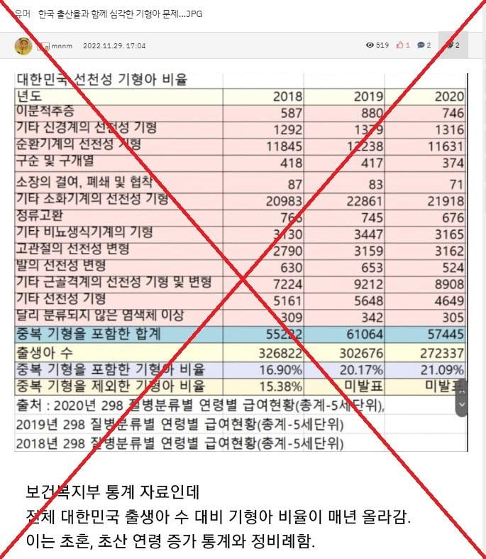
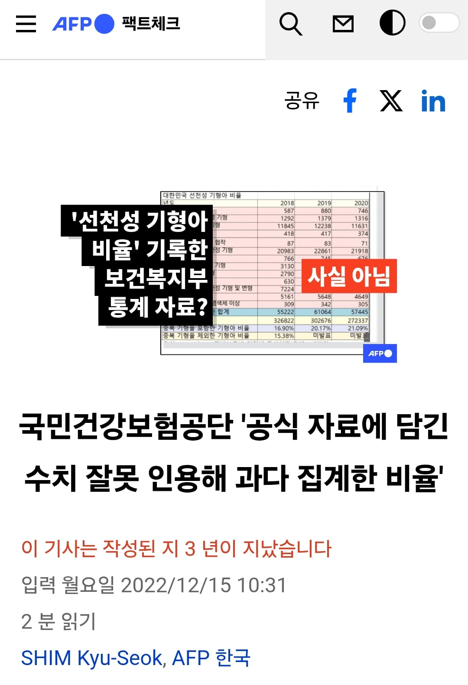
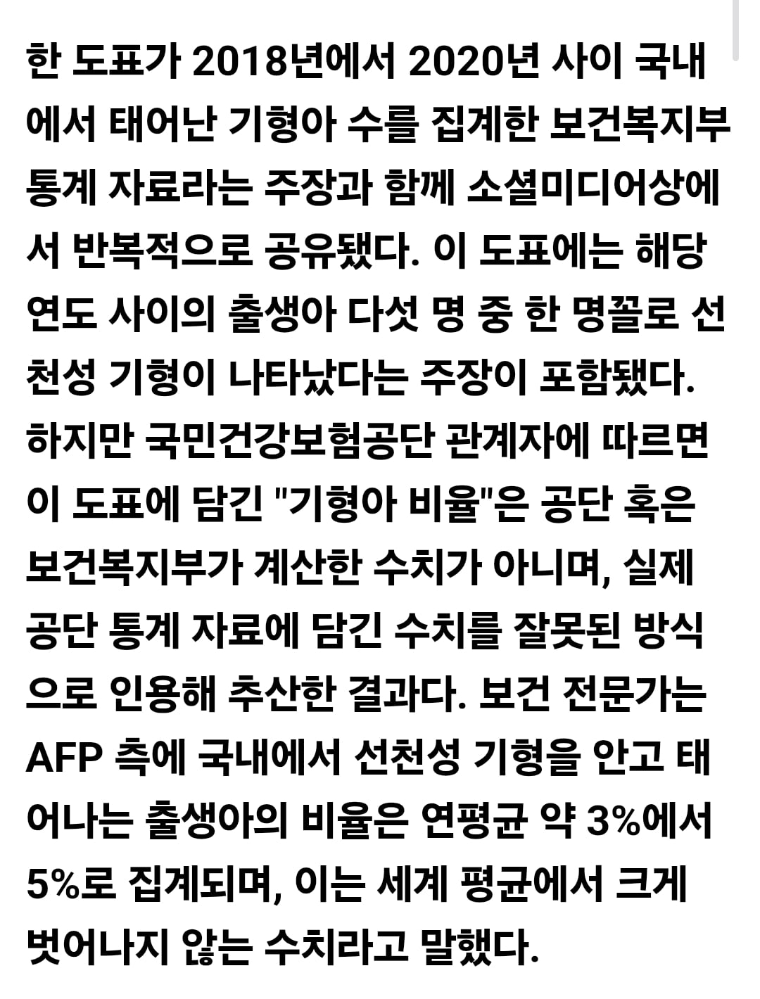
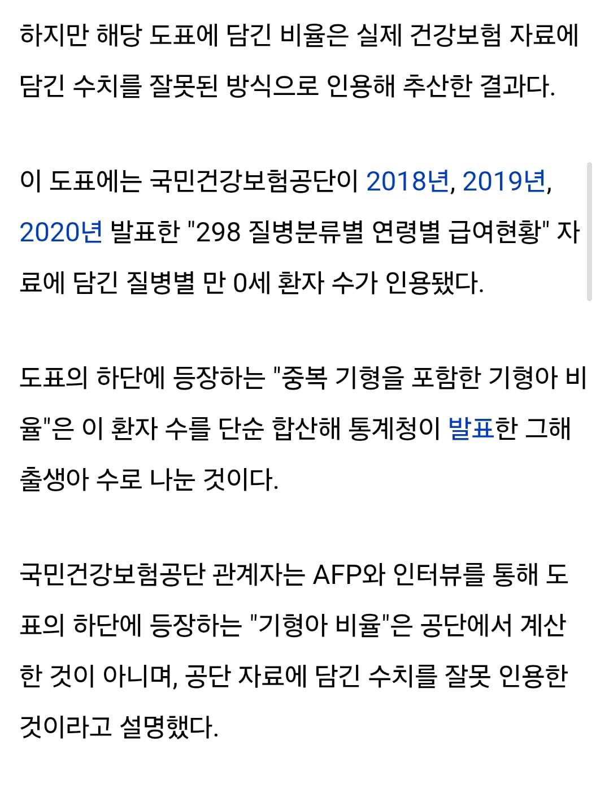
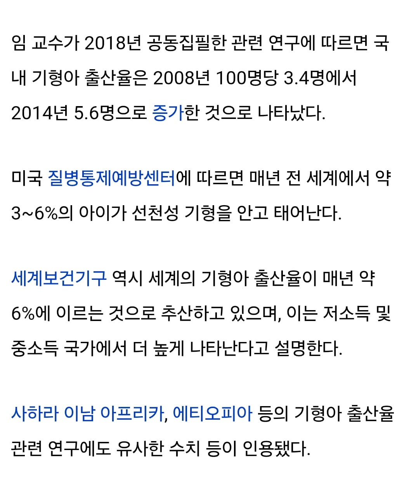

즉 기형 진단 건수를 기형아 명수로 잘못 도출한 거

노산이 기형아에 미치는 영향이 없는 건 아님
그러나 수십배 증가는 주로 염색체 이상 이야기
일반 구조적 기형은 1.1~1.4배 증가 수준
이쪽은 대부분 치료 가능한 기형이고
저 수십배 이상 증가하는 염색체 이상 중에
다운증후군 같은 경우에는 사전 스크리닝에 따른 임신 중절 때문에 그 수가 별로 늘고 있지는 않음
보통 임신 초중기인 10~16주 정도엔 다 알게 되고, 그 진단 기술이 점점 발달하고 있기 때문에 다운증후군 출생 자체가 별로 늘지 않음
애초에 예전부터 그 명수는 100~200명 선에 머무르고 있음
그밖의 중증인 무뇌증, 삼염색체증을 다 합쳐도
즉, 노산이 늘었다고 장애를 안고 살아가야 하는 아이의 수가 어마어마하게 증가했다는 게 아니란 거임
오히려 노산의 증가에 따른 더 큰 문제는 유산이나 산모 합병증임
아이가 태어나기 전에 죽거나, 산모의 건강에 해가 되는 것
이쪽이 더 중요한 이슈임
---
자폐 얘기 추가하자면
자폐도 구조적 기형이랑 비슷한 수준의 영향임
1.1배 정도
흔히들 가져오는 케이스 스터디는 보통 그동안의 자폐 진단 기준의 변화나 인식 변화에 따라서 자폐 진단이 늘어나는 맥락을 반영하지 못한 것임
기하급수적인 증가 어쩌고는 착각임
다 절대적 명수로 보면 별로 늘지 않음
차라리 사산이나 산모 합병증 걱정을 하는 게 맞음
근데 노산 혐오는 왜하는거임 다들 빨리 결혼해서 낳고 싶은 마음은 똑같은디 그렇게 따지면 남자들도 젊을때 빨리 채가서 결혼했어야지 근데 못했으니까 나이 들어서라도 애 가지려 노력하는거잖아 여자들도 다 똑같지 뭔 탓하려면 사람을 탓하지 말고 그럴수밖에 없는 환경을 탓해야지